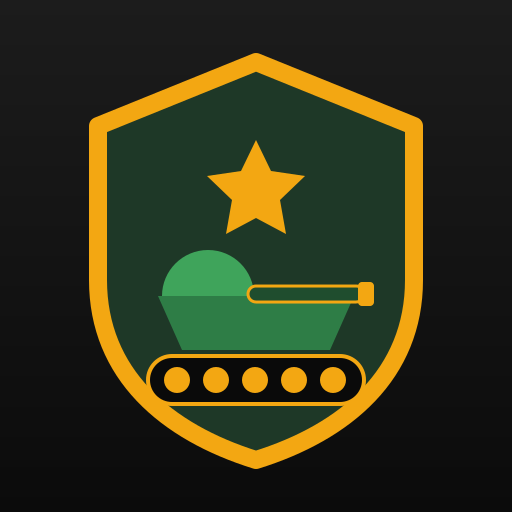

Um experimento comunitário na Solana. Sem pré-venda. Sem promessas. Com dados públicos, riscos explícitos e o compromisso de registrar o que realmente acontecer.

Verde significa verificado on-chain. Nada é marcado como verde antes da prova.
Nada é prometido antes de existir on-chain. Quando publicado, cada item abaixo ganha endereço, transação e link de explorador.
Supply declarado de 1.000.000.000 TANK. Após a criação, o mint será inspecionado: supply, decimals e autoridades.
AGUARDANDO VERIFICAÇÃOCompra pública no mercado aberto, sem tokens gratuitos. Posição real registrada com assinatura da transação.
AGUARDANDO VERIFICAÇÃO100% da posição enviada a contrato público: destinatário imutável, cancelamento desabilitado, datas UTC.
AGUARDANDO VERIFICAÇÃOO endereço do token fica na página de prova, com botão de cópia.
Veja supply, decimals e autoridades no explorador público da Solana.
Confronte compra, posição e contrato de vesting com o que este site publica.
Patentes de participação off-chain. Sem staking. Sem rendimento. Consulta comunitária não vinculante.
Possível e historicamente a regra em memecoins. Nunca use recursos que não pode perder.
Variações de 50% em minutos são comuns. O preço é definido apenas por oferta e demanda.
Limitada no início. Grandes posições movem o preço; whales existem e operam.
Você é o único responsável pelas suas chaves. Perdeu a seed, perdeu tudo.